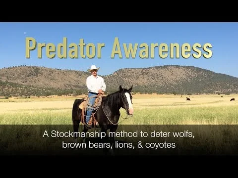
WATCH LESSON ↗01 / OVERVIEW
HOME / VIDEO TRAINING
Explore Mark’s published videos at your own pace, from the first stockmanship lessons to monitoring and puppy development.
12 video lessons

WATCH LESSON ↗01 / OVERVIEW
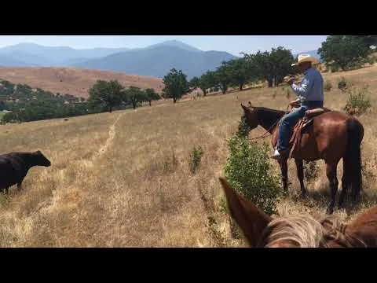
WATCH LESSON ↗02 / STOCKMANSHIP
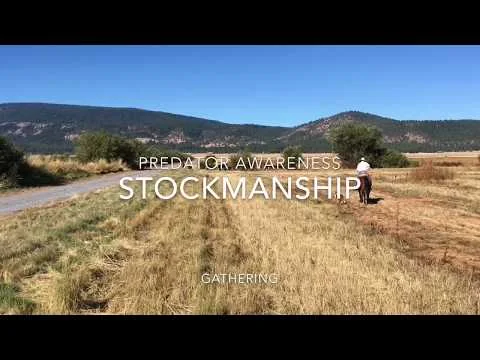
WATCH LESSON ↗03 / STOCKMANSHIP
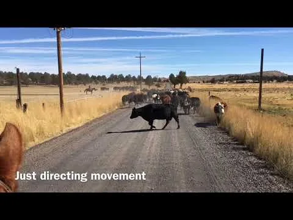
WATCH LESSON ↗04 / STOCKMANSHIP
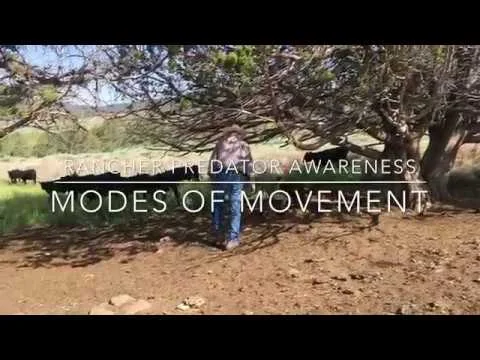
WATCH LESSON ↗05 / TRAINING
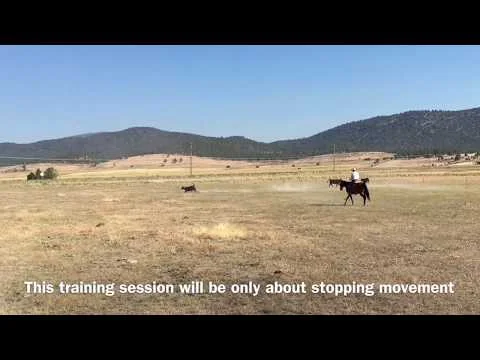
WATCH LESSON ↗06 / TRAINING
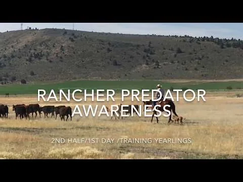
WATCH LESSON ↗07 / TRAINING
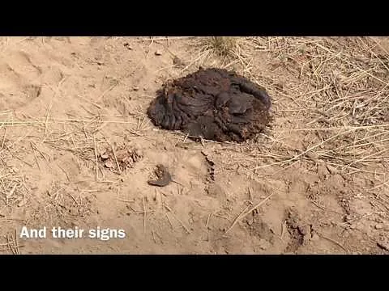
WATCH LESSON ↗08 / MONITORING & SCENT
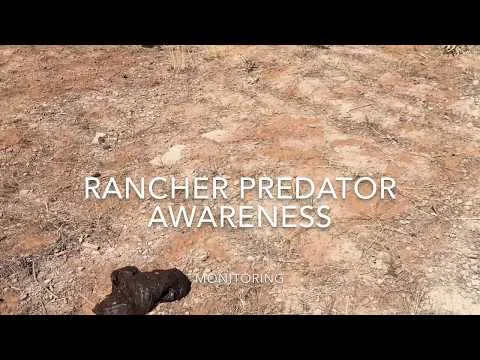
WATCH LESSON ↗09 / MONITORING & SCENT
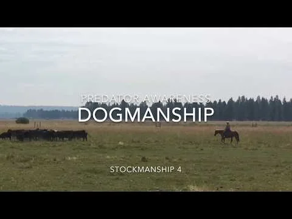
WATCH LESSON ↗10 / DOGS & PUPPIES
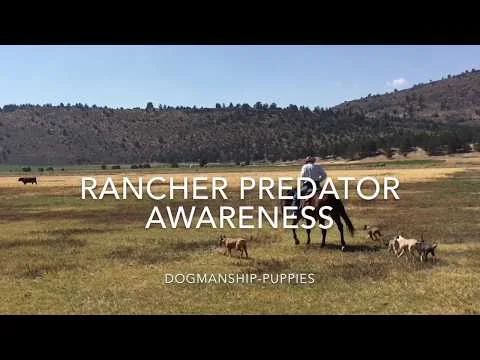
WATCH LESSON ↗11 / DOGS & PUPPIES
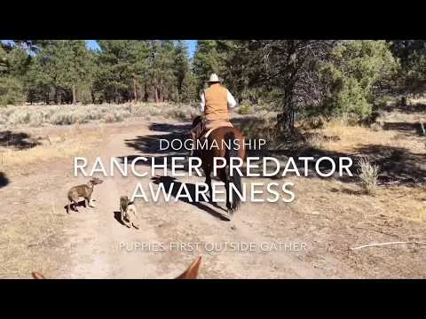
WATCH LESSON ↗12 / DOGS & PUPPIES
No lessons match those words. Try a different search or choose Everything.